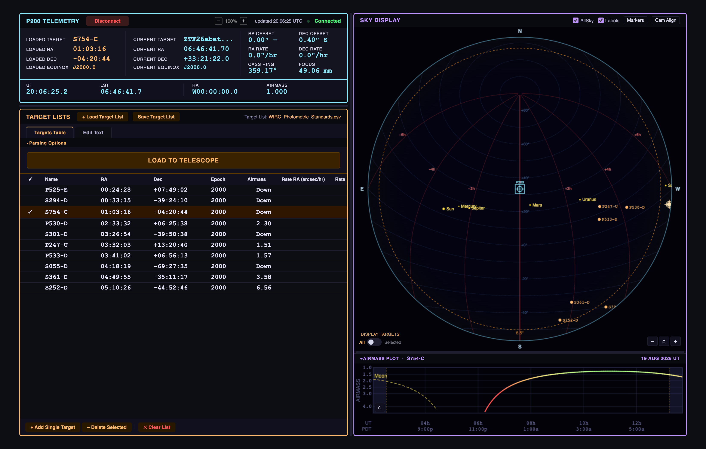
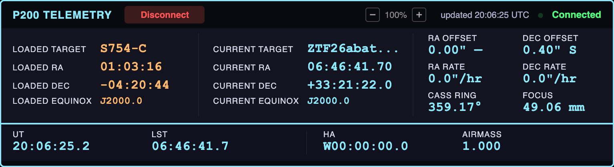
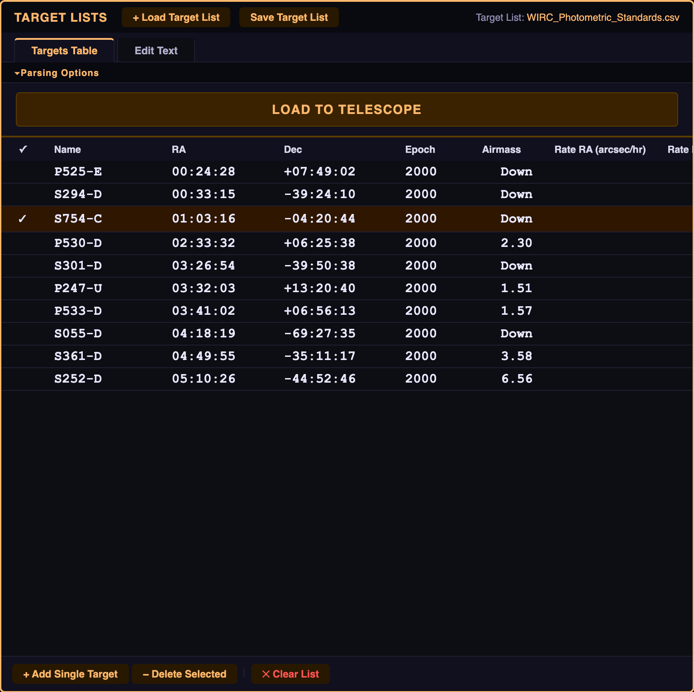
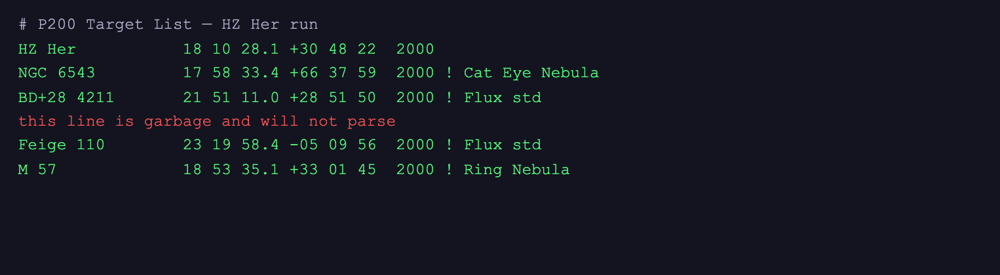
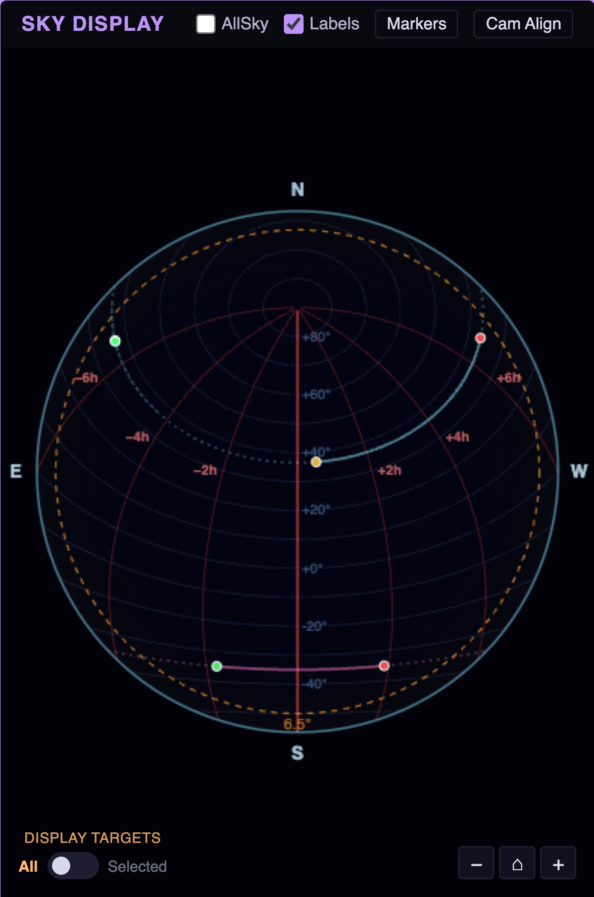
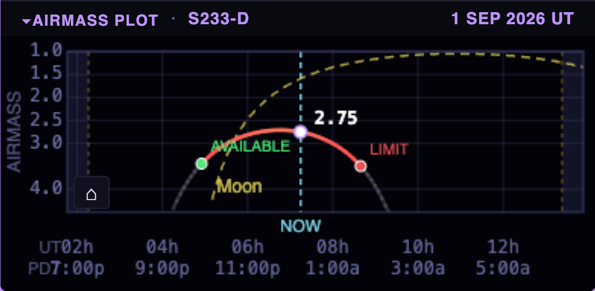
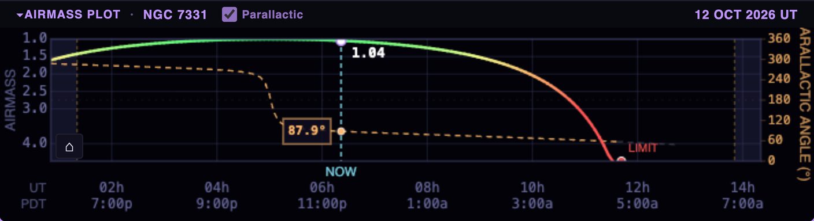
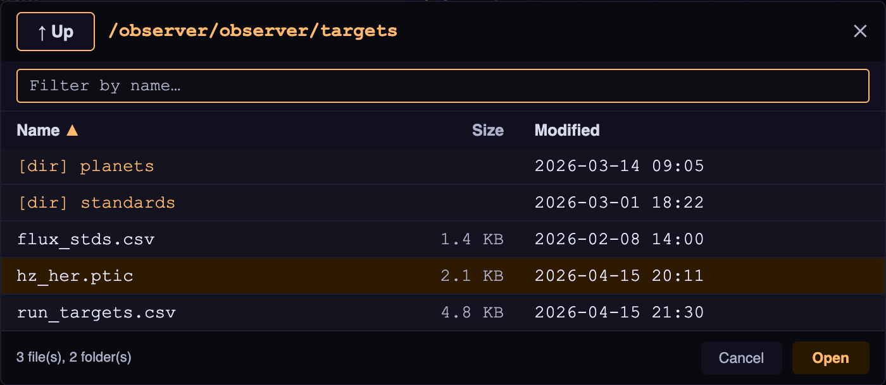

FACSUM (Facility Summary) is a browser-based observing tool for the Palomar Observatory 200-inch Hale Telescope (P200). It brings four key observing-support functions together in a single page:
FACSUM runs directly on Observer1 (observer1.palomar.caltech.edu), where a PHP built-in web server listens on 127.0.0.1:18080. It is used from the Portal workstation. The startup script start_facsum.sh (run on Portal) establishes an SSH tunnel to Observer1, starts the web server if it is not already running, and opens FACSUM in a Firefox window — no manual browser navigation is required. FACSUM is not directly reachable from outside the Palomar network.
Because FACSUM now runs on Observer1, target lists are read and written through ordinary filesystem calls. There is no SFTP step and no login prompt inside the browser: the only password you may be asked for is the Observer1 SSH password requested by start_facsum.sh at launch, and only when a healthy session is not already open.

The interface is divided into four panels arranged in two columns. Each panel has a colored accent to help orient quickly:
| Panel | Position | Accent | Purpose |
|---|---|---|---|
| P200 Telemetry | Left, top | Cyan | Live TCS data: apparent pointing, time, offsets, rates, Cass ring and focus |
| Target Lists | Left, bottom | Orange | Load, edit, save, and send targets to the telescope |
| Sky Display | Right, top | Purple | Real-time sky projection with all-sky camera overlay |
| Airmass Plot | Right, bottom | Purple | Target observability curve across the night |
Resizing panels: Three drag handles let you redistribute screen space to suit your workflow. Drag the vertical bar between the two columns to adjust their widths. Drag either horizontal bar (one between Telemetry and Target Lists, one between the Sky Display and the Airmass Plot) to adjust how space is split between the panels above and below it.
The Airmass Plot section can be collapsed by clicking its header bar, freeing additional vertical space when not needed. Its resize handle disappears while collapsed.
The Telemetry panel header contains a zoom control (−, a percentage readout, and +), which scales the entire FACSUM page. This is useful on the control-room displays, where the default browser text size can be uncomfortably small at a distance.
The panel drag handles and the input-validation tooltips compensate for the zoom factor, so resizing behaves identically at any zoom level. One exception: dragging to pan the sky canvas (§5.6) moves the sky by the zoom factor, so at 150 % the view travels about 1.5× as far as the cursor.
The following steps describe the typical workflow at the start of a night run.
start_facsum.sh. The script reuses a healthy Observer1 session if one exists; otherwise it prompts once for the Observer1 password, opens the SSH tunnel, starts the web server, and opens FACSUM in Firefox. The interface loads and connects to the TCS automatically — live telemetry begins updating within a few seconds.
/observer/observer/targets, where you can navigate to and open your file. FACSUM parses it and populates the table automatically. See §4.1 for alternatives.
COORDS command to the TCS, loading the target's coordinates.

FACSUM connects to the TCS automatically about half a second after the page loads. A background daemon on Observer1 (tcs_daemon.py) holds the TCP connection to the TCS, polls it four times a second, and writes parsed telemetry to a small JSON file; the browser reads that file roughly ten times a second and redraws only when the daemon has published new data.
If the connection is lost or was manually stopped, click Connect in the panel header to restart the daemon and resume polling. A status LED and label on the right side of the header reflect the current connection state, color-coded to match:
| LED color | Label | Meaning |
|---|---|---|
| ● Green (slow pulse) | Connected | Polling the TCS successfully; all fields update continuously |
| ● Yellow (fast pulse) | Reconnecting… | The browser lost contact with the Observer1 server and is retrying (the button reads Connecting…) |
| ● Yellow (fast pulse) | TCS Reconnecting… | The daemon is running but has lost its link to the TCS and is retrying |
| ● Red (static) | Disconnected | No TCS connection — the daemon is idle, stopped, or has published nothing yet |
| ● Red (static) | Daemon stopped | The daemon shut down cleanly, e.g. after Disconnect or a heartbeat timeout |
| ● Red (static) | Error | The daemon could not reach the TCS; the underlying message appears in the status bar |
The LED pulses slowly while connected and faster while connecting, providing a passive at-a-glance indication that the link is live. It is static when disconnected. To the left of the LED, a small updated HH:MM:SS UTC stamp shows when the daemon last published a telemetry frame, and a status bar along the bottom of the panel carries any message the daemon reports.
Click Disconnect to stop the daemon cleanly and release the TCS connection. Closing or navigating away from the tab also sends a disconnect request automatically.
Brief network hiccups between Observer1 and the TCS are common and are handled without operator intervention. Two mechanisms are worth knowing about, because they explain why the display sometimes holds still instead of alarming.
| Mechanism | Behavior |
|---|---|
| TCS grace period | If the daemon reports that it has lost the TCS, the displayed values are frozen and no warning is shown for the first 12 seconds. The daemon normally reconnects within a couple of seconds. Only if the outage outlasts the grace period does the header switch to TCS Reconnecting…, and even then the last-known field values stay on screen rather than blanking. |
| Browser auto-reconnect | If the browser cannot reach the Observer1 web server for about 5 seconds of continuous failures, FACSUM stops polling and retries the connection up to 5 times, 5 seconds apart. Progress is reported in the status bar ("Connection lost — reconnecting (attempt 2 of 5)…"). If all attempts fail, the panel returns to Disconnected and the status bar invites you to click Connect. |
| Heartbeat | Every telemetry poll renews a heartbeat file. If the heartbeat goes stale for 120 seconds (for example because the browser was closed without a clean disconnect) the daemon drops its TCS connection on its own and waits idle until a browser returns. This prevents an abandoned session from holding the TCS link open. |
The Telemetry panel shows pointing information in two side-by-side blocks, followed by a hardware strip and a time strip. The Loaded block changes only in response to your actions in the Target Lists panel. The Current block reflects live TCS data and updates continuously while connected.
Populated when Load to Telescope succeeds (§4.7). All four fields show "—" until the first successful send in the current session.
| Field | Description |
|---|---|
| LOADED TARGET | Name of the last target sent to the TCS (truncated to 12 characters if longer) |
| LOADED RA | Right Ascension of that target (HH:MM:SS.s) |
| LOADED DEC | Declination of that target (±DD:MM:SS) |
| LOADED EQUINOX | Coordinate epoch of that target, normalized for display (e.g. J2000.0; epochs before 1984 are shown with a B prefix) |
| Field | Description |
|---|---|
| CURRENT TARGET | Target name currently set in the TCS (truncated to 12 characters if longer) |
| CURRENT RA | Apparent Right Ascension of the telescope, computed as LST − HA from TCS encoder data (HH:MM:SS.ss) |
| CURRENT DEC | Apparent Declination, derived from the reported telescope azimuth and elevation together with the Palomar latitude (±DD:MM:SS.s) |
| CURRENT EQUINOX | Coordinate epoch of the current pointing — sourced from the last target sent by FACSUM, as the TCS does not report this value in its telemetry stream. Reads "—" until the first successful send. |
| Field | Description |
|---|---|
| RA OFFSET | Current RA guide/offset correction, suffixed E or W. Shown in arcseconds, or in degrees once the magnitude reaches 1000″. |
| DEC OFFSET | Current Dec guide/offset correction, suffixed N or S, with the same unit switch. |
| RA RATE | Non-sidereal tracking rate in RA (arcsec/hr); reads 0.0"/hr when not tracking |
| DEC RATE | Non-sidereal tracking rate in Dec (arcsec/hr) |
| CASS RING | Cassegrain ring rotation angle, normalized to 0–360° |
| FOCUS | Secondary mirror position (mm) |
| Field | Description |
|---|---|
| UT | Universal Time as reported by the TCS (HH:MM:SS) |
| LST | Local Sidereal Time at Palomar (HH:MM:SS) |
| HA | Hour Angle, prefixed E or W of meridian |
| AIRMASS | Airmass at the current telescope pointing, as reported by the TCS |
There are three ways to get targets into FACSUM:
The filename of the currently loaded list is always shown in the upper-right corner of the panel header (e.g., targets123.csv); it reads — when no list is loaded. Opening a file (or adding, editing or deleting a target) activates the Save Target List and ✕ Clear List buttons.
FACSUM supports three file formats (CSV, PTIC, and NGPS) and auto-detects the format of any file you open. See Appendix A for the full format specification.
Below the tab bar is a collapsible Parsing Options section. Click the summary line to expand or collapse it. In most cases the defaults work without adjustment, and the section can be left closed.
| Option | Choices | Notes |
|---|---|---|
| File Type | Auto-detect · CSV · PTIC | Auto-detect scores every format/delimiter combination against the file and picks the best match, showing a summary such as "auto-detected: CSV comma (12/12 lines)". Override only if auto-detection picks the wrong format. NGPS is recognized from its header row and does not need (or have) a radio button. |
| Delimiter | Auto · Comma · Semicolon · Tab · Space · Other | Applies to CSV files only. Auto examines up to ten sample lines and picks the most frequent separator among comma, semicolon, tab and pipe. Choose Other and type a character (e.g. |) for anything else; typing in that box selects the Other radio for you. |
| Rate Units | Proper Motion (0.0001s/yr, 0.001"/yr) Non-sid Tracking (arcsec/hr, arcsec/hr) Non-sid Tracking (sec/hr, arcsec/hr) |
Tells FACSUM how to interpret the rate columns of your file, and therefore what motion flag to send to the TCS. Non-sid Tracking (arcsec/hr, arcsec/hr) is the default and covers most solar-system target lists. The table's rate column headers update to match the chosen unit mode. |
| Apply Rates | Checkbox (checked by default) | When checked, non-sidereal tracking rates are included in the COORDS command sent to the TCS. Uncheck for sidereal targets whose file rates should be ignored. |

| Column | Description |
|---|---|
| ✓ (Observed) | Only visible when the table holds at least one target. See §4.8. |
| Name | Object name from the target file |
| RA | Right Ascension (HH:MM:SS.s). Shown in italics if FACSUM converted it from a decimal value — hover for the original. |
| Dec | Declination (±DD:MM:SS), with the same italic/hover convention |
| Epoch | Coordinate epoch (e.g. 2000) |
| Airmass | Current airmass, computed from LST telemetry and updated continuously. Shows Down when the object is at or below the P200 altitude limit (6.5°, airmass ≈ 8.8), and "—" when LST is unavailable. This column is computed and cannot be edited. |
| PM RA / Rate RA | Proper motion or tracking rate in RA. The header label changes with the Rate Units setting — PM RA (0.0001s/yr), Rate RA (arcsec/hr) or Rate RA (s/hr). |
| PM Dec / Rate Dec | Proper motion or tracking rate in Dec. |
| Prop RA (mas/yr) | True proper motion in RA, in milliarcseconds per year. Unlike PM RA / Rate RA above, this column's meaning never changes with the Rate Units setting — it is always proper motion, for target lists that carry both a tracking/offset rate and a separate proper motion figure. |
| Prop Dec (mas/yr) | True proper motion in Dec, in milliarcseconds per year. |
| Notes | Any trailing text from the source line (text after a ! character, plus unrecognized trailing tokens) |
NGPS files add two further columns, Priority and Mag / Filter, and rename the rate columns to Offset RA / Offset Dec and Notes to Comment (Appendix A.3). NGPS lines have no separate proper-motion field, so their Prop RA / Prop Dec cells are shown dimmed and blank.
Any line FACSUM cannot interpret is listed in red at the top of the table as "Failed to Parse: …", with the raw text shown. These rows are informational only — they cannot be selected or sent. Fix them in the Edit Text tab (§4.6), where the same lines are highlighted red as you type.
The search box above the table filters rows live by name as you type — matching is a simple case-insensitive substring match, with no wildcards needed. Clear the box to show every target again. Filtering never edits or reorders the underlying list; it only hides non-matching rows, and range-selection (Shift+click, below) is aware of which rows are currently visible.
Drag a column header left or right to reorder it; drop it where you want it to sit. The new order is remembered in the browser and applies the next time FACSUM is opened on that workstation. The leading ✓ (Observed) column cannot be moved.
Click any column header to sort by that column — click once for ascending, again for descending, and a third time to restore the original file order. An arrow (▲ / ▼) marks the active sort column. Sorting by Airmass is a quick way to find the most observable target right now. Sorting is reset whenever the list is re-parsed.
Click a row to select it (it highlights in orange), replacing any previous selection. Click the same row again to deselect it. Selecting a target:
Hold Ctrl (or ⌘ Cmd) and click additional rows to add or remove them from the selection one at a time, without disturbing the rest. Hold Shift and click a row to select every row visually between it and the last row you clicked — the anchor for the range is the most recent plain, Ctrl, or Cmd click, and repeating Shift+click re-draws the range from that same anchor. Combine Shift+Ctrl (or Shift+Cmd) to add a whole range to an existing selection instead of replacing it. Range selection follows whatever is currently visible on screen, so it respects the active sort order and search filter.
Each selected target is drawn in its own color, consistent across the sky display, the Airmass Plot, and that target's own row highlight in the table, so a curve, a path, or a row can always be traced back to the other two at a glance. With two or more targets selected, Load to Telescope is disabled (the TCS can only be sent one target's coordinates at a time) but − Delete Selected removes all selected targets together.
Double-click any editable cell to change its value in place, without switching to the Edit Text tab. The cell becomes a text field; press Enter to commit, Escape to cancel. Clicking elsewhere also commits. The Airmass column is computed and the ✓ column is a toggle, so neither is editable.
Values are validated as you type, and an invalid value refuses to commit — the field stays open with a red outline and an explanatory tooltip:
| Field | Accepted | Example message |
|---|---|---|
| Name | Any non-empty string; at most 17 characters on a PTIC-format line | Name too long for PTIC format (max 17 chars) |
| RA | HH:MM:SS[.ss], hours 0–23 | Impossible RA — minutes must be 0–59 |
| Dec | ±DD:MM:SS[.s], magnitude ≤ 90° | Invalid syntax — expected ±DD:MM:SS.s |
| Epoch | 2000, 2000.0, J2000, B1950 | Invalid epoch — expected e.g. 2000, J2000, B1950 |
| Rates | A signed number | Invalid rate — expected a numeric value |
| Notes, Priority, Mag / Filter | Free text | — |
On commit, FACSUM rewrites only the edited line in the raw text, in that line's own original format (Appendix A.4), and then re-parses the whole list, so the table and the text you would save can never drift apart. Your sort order and row selection are preserved across the edit.
Click + Add Single Target at the bottom of the panel to open a data-entry form. Name, RA and Dec are required (the Add Target button stays disabled until all three are valid) and fields are validated exactly as in §4.4, with a green outline for good input and a red outline plus tooltip for bad. The form separates Non-sidereal Rates (arcsec/hr) from Proper Motion (mas/yr), and has a free-text Notes field. Pressing Enter anywhere in the form submits it when the required fields are valid.
The new target is appended to the list as a comma-delimited line and is immediately available for selection and sending. This is the quickest way to add a target of opportunity.
Type an object name and click the 🔍 button beside it to look the object up in SIMBAD (via the CDS Sesame name resolver, proxied through Observer1). The form is replaced by a result card:
cdsweb.u-strasbg.fr and times out after 15 seconds. It resolves coordinates and proper motions only — never rates, magnitudes or exposure times.
Select one or more rows (§4.3), then click − Delete Selected to remove them. The corresponding line(s) are deleted from the raw text and the list is re-parsed. The deletion cannot be undone from the table view; use the Edit Text tab (§4.6) and its Undo button if needed.
Click ✕ Clear List (separated by a | from the Delete button) to unload everything. This removes all rows, clears the Edit Text area and the detected-format label, hides the Observed column, resets the filename display to —, disables Save and Load to Telescope, and resets the file browser back to /observer/observer/targets so the next Load Target List opens there. The sky display and airmass plot clear immediately. This action cannot be undone.

The Edit Text tab shows the raw text of the loaded target list and lets you edit it directly. It is the single source of truth: everything the table shows is parsed from this text, and it is exactly what gets written when you save. A live syntax-highlighting overlay colors each line as you type:
# or !), blank line, or an NGPS header rowThree action buttons appear at the bottom of the Edit Text pane:
Switching to the Targets Table tab also re-parses the text, so you can move between the two views freely.
The Load to Telescope button sits in its own bar between the Parsing Options and the table. It is always visible but stays disabled until exactly one table row is selected — with two or more targets selected (§4.3) it stays disabled, since the TCS can only be sent one target's coordinates at a time.
Clicking it sends a COORDS command to the P200 TCS over a direct network connection (see Appendix B for the command format).
The button shows a brief status as the command is processed:
If the selected row has an RA or Dec that cannot be interpreted, FACSUM refuses to send and shows an alert instead.
When the table holds at least one target, its first column shows a ✓ for each target that has been observed during the session. The column is hidden when the table is empty.
Click Save Target List in the panel header to open the file browser in save mode (§7). A Filename field appears, pre-filled with the name of the currently loaded list, and the action button reads Save Here. Navigate to the directory you want, adjust the filename, and click Save Here to write the current text (including any edits, additions and deletions) either over the original file or to a new one. Clicking an existing file copies its name into the field, so overwriting is deliberate rather than accidental.

The panel header carries four controls: the AllSky and Labels checkboxes, and the Markers and Cam Align dropdowns. Clicking anywhere outside an open dropdown closes it.
The sky canvas uses an azimuthal equidistant projection looking straight up from Palomar Mountain. The zenith is at the center; objects closer to the horizon appear closer to the edge of the circle.
Orientation follows standard astronomical convention: North is up, East is to the left. The grid is fixed in hour-angle/declination space, so an object transiting the meridian appears on the meridian line, and objects at large hour angles appear toward the east or west edges.
| Element | Appearance | Meaning |
|---|---|---|
| Declination circles | Faint blue rings every 10° | Lines of constant declination; labeled every 20° where they cross the meridian |
| Hour angle lines & Meridian | Red lines at ±2 h, ±4 h, ±6 h; the meridian (HA = 0 h) drawn thicker and brighter | Lines of constant HA, labeled at their Dec +30° crossing (west of the meridian positive); objects cross the meridian at their highest elevation |
| Altitude limit | Orange dashed ring, labeled 6.5° | The P200 elevation limit — avoid pointing inside this ring |
| Horizon circle | Cyan outer ring | The horizon (altitude = 0°) |
| Cardinal labels | N, E, S, W outside the ring | Compass directions |
| Telescope crosshair | Cyan circle + lines + square, labeled P200 | Current telescope pointing from live TCS telemetry. Always rendered on top of target dots and body labels. |
| Target dots | Orange dots with name labels | Parsed targets above the horizon; each selected target has a larger, paler dot plus a crosshair and a full-night path trace (§5.7) — in its own color when several targets are selected at once |
Unchecking Labels hides the declination and hour-angle values, target names, and body names, leaving the geometry uncluttered. The cardinal letters and the 6.5° ring label are always drawn.
Check AllSky in the panel header to overlay the live Palomar all-sky camera image on the sky projection. The image is fetched every 30 seconds through a server-side proxy on Observer1 (which caches it for 30 seconds so many browsers can share one camera fetch) and composited at 55 % opacity.
The overlay is not simply pasted on: FACSUM remaps the fisheye image pixel by pixel, using the lens distortion coefficients from the original FACSUM telescope.cfg, so that features in the camera image land on their true altitude and azimuth in the equidistant grid. If the browser cannot read the image pixels, it silently falls back to a plain crop-and-rotate, which is close but not geometrically exact.
The radius treated as the horizon is calibrated against the Moon's known altitude. One visible consequence: the outermost ring of the display is partly blank, because the camera's circular image is clipped top and bottom by its own sensor and the overlay extends out to the true horizon, reaching into that clipped region. Nothing is lost that the camera ever recorded.
If the camera is unreachable (daytime, dome closed, network outage), the most recent successful image is retained and served until a new one arrives.
Click Cam Align in the panel header for two calibration fields that fine-tune how the all-sky image sits on the grid. Adjust them while watching a recognizable feature (the Moon, a bright planet, or the dome slit) and the overlay redraws live as you type.
| Field | Default | Range | Effect |
|---|---|---|---|
| Rotation ° CW | −10.5 | −180 to 180, 0.5° steps | Rotates the camera image clockwise about the zenith to align its north with the grid's north |
| Scale | 1.0 | 0.5 to 2.0, 0.005 steps | Scales the camera field of view. Values below 1 zoom the camera image in, pushing its horizon beyond the canvas edge. |
Both values are stored in the browser, so an alignment you establish once survives page reloads on that workstation. They affect only the overlay — never the projection, the grid, or any computed position.
The cardinal markers around the sky display deliberately do not rotate with the camera image. They mark the true sky frame that every other overlay (the coordinate grid, the target dots, the telescope crosshair) is drawn in, and they are the fixed reference you align the camera image to. If they moved with the image, there would be nothing to calibrate against.
Click Markers in the panel header to open a small dropdown with two checkboxes, both enabled by default:
Bodies below the horizon are not drawn. Toggle Labels in the header to show or hide body name labels next to each marker.
A small Display Targets switch in the lower-left corner of the sky canvas controls how much of the target list is plotted:
Click the switch, or either of the two labels, to change modes. Selected is the practical choice with long lists, where dozens of labeled dots can bury the telescope crosshair and the all-sky image.
Three buttons in the lower-right corner of the sky canvas control the view level:
| Button | Action |
|---|---|
| − (Zoom out) | Shrinks the sky circle within the pane (÷ 1.6 per click, no smaller than the full view) |
| ⌂ (Reset) | Returns to the default full view with no zoom or pan offset |
| + (Zoom in) | Enlarges the sky circle within the pane (× 1.6 per click, up to 20×) |
When zoomed in, click and drag on the canvas to pan; panning is clamped so the sky circle cannot be dragged entirely out of view. The cursor changes to a grab icon when panning is available. The entire sky circle (grid, markers, cardinal labels, and all-sky overlay) scales and pans together uniformly.
Every selected target (§4.3) is drawn with its full rise-to-set path across the current observing night, extending well past dusk and dawn on each side so the whole arc is visible, not just the dark-time portion. With several targets selected, each path is drawn in that target's own color, matching its airmass curve (§6.1).
Hover over any of these markers to see a color-matched tooltip (Sunset, Sunrise, Limit, or Available) explaining what it means. The tooltip is colored to match the marker and appears above the cursor.
Hovering over the Airmass Plot (§6.3) also drops a small hover dot onto each selected target's path here, at the sky position corresponding to that moment in the night — a quick way to see where a target will be at a specific time without leaving the sky display.

The Airmass Plot (below the sky canvas, collapsible) shows the observability of the selected target across the entire observing night. It updates as new telemetry arrives and is redrawn at least once a minute so the NOW marker stays current.
The section header doubles as a legend: it shows the name of the selected target and the UT date of the night being displayed (the date on which sunset falls), e.g. 17 AUG 2026 UT.
| Element | Description |
|---|---|
| X-axis | UT hours across the night, gridded every 2 hours (top label row), with Pacific Time equivalents below (labeled PDT or PST as appropriate) |
| Y-axis | Airmass from 1.0 (zenith) to 4.5, gridded at 1.0, 1.5, 2.0, 2.5, 3.0 and 4.0. Lower is better. A second axis appears along the right edge when Parallactic is enabled (§6.5); the airmass scale is unaffected by it. |
| Dark blue shading | The 30-minute margins before sunset and after sunrise — daylight, not observing time |
| Amber dashed lines | Exact sunset and sunrise times |
| Cyan dashed line | Current time, labeled NOW in the margin just below the plot. Derived from the TCS UT field, so it reflects observatory time rather than the workstation clock. |
| Yellow dashed curve | The Moon's airmass across the night, labeled Moon. Shown whenever the Moon marker is enabled in the Sky Display's Markers dropdown. |
| Color-graded target curve | For a single selected target, airmass graded continuously by value: green at 1.0, yellow at 1.5, orange at 2.0, red at 3.0 and above. With several targets selected (§4.3), each is drawn instead as a flat line in its own color, so distinct targets stay identifiable where a value gradient could not tell them apart. In both cases the curve breaks wherever the target is beyond airmass 4.5, and dims wherever it is below the P200's full pointing envelope (see below), even while still above the horizon. |
| Red / green crossing markers | A small dot marks every point where the target crosses into or out of the P200's pointing limits (the mechanical hour-angle/declination envelope combined with the 6.5° horizon, whichever binds first), red entering a limit, green clearing one. For a single selected target these are also labeled LIMIT / AVAILABLE; labels are omitted with several targets selected to avoid overlapping text. The same crossings appear on the target's path trace on the Sky Display (§5.7). |
| White dot on curve | The target's airmass at the NOW line, with a numeric label for a single selection (ringed red if the target is presently beyond a limit); a smaller unlabeled ring per target when several are shown. |
If no target is selected, the plot area shows the message "Select a target to view its airmass curve" — the Moon curve, grid and twilight shading are still drawn.
The plot can be panned horizontally to inspect earlier or later parts of the night:
The NOW line, twilight shading, sunrise/sunset markers and all curves scroll together, so relative timing is always clear. Curves are clipped at the plot border rather than spilling into the axis margins.
Hover the mouse over the plot to read off values at any time during the night:
Moving the mouse out of the plot area dismisses the cursor. Hovering does not interfere with drag-to-pan — a small drag threshold (4 px) distinguishes the two gestures.
Click the AIRMASS PLOT header bar to collapse or expand the section; collapsing frees the vertical space for the sky display. Drag the handle just above the header to change the plot's height while it is open. The handle is hidden while the section is collapsed, and no drawing work is done for a collapsed plot.

Tick Parallactic, next to the target name in the plot's header bar, to add a dashed trace of each selected target's parallactic angle across the night. The angle is read on a second axis that appears along the right edge of the plot, running from 0° at the bottom to 360° at the top; the airmass scale on the left is unchanged. The checkbox is off every time the page loads; switch it on when you need it. Like the Sky Display's own AllSky, Labels and Markers checkboxes, it is not remembered between sessions.
Angles are given in 0°–360°, matching the range the TCS accepts for a ring angle, so the number shown can be typed in without first converting a negative value.
| Element | Meaning |
|---|---|
| Dashed trace | Parallactic angle over the night, in the target's own color (orange for a single selection). Dashed throughout, to distinguish it from the solid airmass curve on the left axis. |
| Dot at NOW | The angle at the current time. With one target selected, the value is printed beside it — this is the number to set the slit to. |
| Dot under the cursor | The angle at whatever time you hover, alongside the airmass readout (§6.3), so you can read ahead to a planned exposure. |
| Faded trace | Same convention as the airmass curve: the target is below the practical horizon or outside the P200's pointing limits there (§6.1). |
| Break in the trace | Not a gap in coverage — see the note below. |

/observer/observer/targets. Directories are listed first in orange; the selected file is highlighted.The file browser gives you access to the target-list directory on observer1.palomar.caltech.edu. It opens when you click + Load Target List (open mode) or Save Target List (save mode) in the Target Lists panel header.
| Action | How |
|---|---|
| Enter a directory | Double-click any [dir] row |
| Go up one level | Click ↑ Up in the modal header (disabled at the root) |
| Filter the listing | Type in the Filter by name… box (case-insensitive; resets on navigation). The status line shows the number of matches. |
| Sort the listing | Click a column header (Name, Size, or Modified) to sort; click again to reverse. Directories always sort before files. |
| Select a file | Click a file row to highlight it |
| Open a file | Double-click a file row, or click a row and press Open |
| Save to a file | In save mode, navigate to the directory, type or confirm the Filename, and press Save Here. Clicking an existing file copies its name into the field. |
| Cancel | Click Cancel, the ✕ button, or outside the dialog — nothing is loaded or written |
The browser opens at /observer/observer/targets and, within a single page load, reopens wherever you last were. Reloading the page (or clicking ✕ Clear List) returns it to the default directory.
Access is confined to that directory and its subdirectories: ↑ Up stops at the root and any path outside the tree is rejected by the server. The status line at the bottom of the dialog reports the number of files and folders in the current directory, or an error if a directory cannot be read.
FACSUM accepts any plain-text target file in CSV, PTIC or NGPS format (see Appendix A). File extensions (.csv, .ptic, .list, .txt, etc.) are not significant — the format is detected from the file content automatically.
FACSUM supports three plain-text target list formats. All three accept comment lines beginning with # or !, and inline comments after a ! on any data line. Text after the ! is treated as notes and is shown in the Notes column of the table.
Lines are parsed independently: a file may mix CSV and PTIC lines, and each row remembers which format it came from so that later edits are written back in the same style (A.4).
Tabular data with consistent column separators (comma, semicolon, tab, space, pipe, or a custom character). Fields are positional and parsed left-to-right:
| # | Field | Required? | Format | Example |
|---|---|---|---|---|
| 1 | Name | Yes | Any string; quote it if it contains the delimiter | HZ Her |
| 2 | RA | Yes | HH:MM:SS.s, HH MM SS, or a decimal value | 18:10:28.1 |
| 3 | Dec | Yes | ±DD:MM:SS, DD MM SS, or decimal degrees | +30:48:22 |
| 4 | Epoch | No | J2000, B1950, or a numeric year (defaults to 2000) | 2000 |
| 5 | Rate RA | No | Numeric; units set by the Rate Units control | 0.00 |
| 6 | Rate Dec | No | Numeric | 0.00 |
| 7 | PM RA | No | Numeric, mas/yr — only read if fields 5 and 6 are also numeric | -1.234 |
| 8 | PM Dec | No | Numeric, mas/yr | 3.456 |
| 9+ | Notes | No | Any remaining text, or text after ! | Flux std |
The four optional numeric fields are consumed greedily and in order: the first non-numeric token stops the sequence, and everything from that point onward becomes Notes. So a line with a rate pair followed by a comment works, but a line with a comment between the rates and the proper motions does not.
10:08:22.4 parses, 10:08 does not.HZ_Her 18 10 28.1 +30 48 22 2000); FACSUM recognizes this when there are at least seven tokens and the second is a bare number.M 57 18:53:35.1 +33:01:45) — everything before the first sexagesimal token is taken as the name.Example — comma-separated:
# Name, RA, Dec, Epoch HZ Her, 18:10:28.1, +30:48:22, 2000 NGC 6543, 17:58:33.4, +66:37:59, 2000 ! Cat Eye Nebula Feige 110, 23:19:58.4, -05:09:56, 2000 ! Flux standard
Fixed-width format used by the original FACSUM and the Palomar TCS catalog system. The target name occupies the first 17 characters (space-padded); the remainder of the line is split into space-separated tokens.
| Columns | Field | Notes |
|---|---|---|
| 0 – 16 | Name (17 chars) | Space-padded to the right |
| 17+ | RA | Three tokens: HH MM SS.s (required) |
| Dec | Three tokens: ±DD MM SS (required) | |
| Epoch (optional) | Any later token that looks like an epoch (2000, J2000, B1950). Defaults to 2000 if absent. | |
| Rates (optional) | A single token of the form pm=<rateRA>,<rateDec>. Units are set by the Rate Units control. | |
| Notes (optional) | Any remaining tokens, plus anything after a ! |
pm= prefix. Unlike CSV, bare numbers after the epoch are not read as rates — they are collected into Notes. Write pm=12.4,-3.1 to specify tracking rates on a PTIC line.
Example:
# Name RA Dec Epoch HZ Her 18 10 28.1 +30 48 22 2000 NGC 6543 17 58 33.4 +66 37 59 2000 ! Cat Eye Nebula BD+28 4211 21 51 11.0 +28 51 50 2000 Encke 08 44 12.0 +18 22 05 2000 pm=41.7,-12.3 ! comet
Column-based format used by the Next Generation Palomar Spectrograph (NGPS) observing tool. FACSUM recognizes it automatically from a header row whose first three columns are NAME, RA, and DECL. Detection takes precedence over CSV and PTIC, and the File Type radio buttons do not apply.
NGPS coordinates may be written either as decimal degrees (J2000) for both axes (the form the NGPS tool itself produces) or as ordinary sexagesimal values (16:31:33.810, +30:08:46.40), which some list generators emit instead. FACSUM detects which is in use line by line, so a file written either way loads without any setting to change. Coordinates are converted as needed for display and for sending to the TCS.
| Column | Required? | Description |
|---|---|---|
| NAME | Yes | Target name |
| RA | Yes | Right Ascension, J2000 — decimal degrees or HH:MM:SS.s |
| DECL | Yes | Declination, J2000 — decimal degrees or ±DD:MM:SS.s |
| OFFSET_RA | No | RA offset (arcsec); shown in the Offset RA column |
| OFFSET_DEC | No | Dec offset (arcsec); shown in the Offset Dec column |
| COMMENT | No | Free-text comment, shown in the Comment column |
| PRIORITY | No | Integer priority; shown in an extra Priority column |
| MAGNITUDE, MAGFILTER | No | Object magnitude and its filter band; shown together in a Mag / Filter column |
| EXPTIME | No | Exposure time (seconds) or SNR <value> |
Both comma-separated and space-delimited NGPS files are supported. In space-delimited files the COMMENT column may contain spaces, so FACSUM parses the trailing structured columns from the end of the line inward and treats whatever is left as the comment. Other NGPS spectrograph columns (BINSPAT, BINSPECT, SLITANGLE, SLITWIDTH, AIRMASS_MAX, WRANGE_LOW, WRANGE_HIGH, CHANNEL) are recognized for that purpose but are not displayed.
Example — space-delimited, decimal degrees:
# NGPS target list NAME RA DECL COMMENT PRIORITY MAGNITUDE MAGFILTER EXPTIME HZ_Her 272.6170 30.8061 X-ray binary 1 8.9 V 600 NGC_6543 269.6392 66.6330 Cat Eye Nebula 2 11.2 V 300
Example — comma-separated, sexagesimal:
NAME,RA,DECL,SLITWIDTH,EXPTIME,NEXP,AIRMASS_MAX,COMMENT P330E,16:31:33.810,+30:08:46.40,SET 1.5,SET 60,2,1.8,CALSPEC standard P2190,16:01:01.838,+36:56:19.70,SET 1.5,SET 300,2,1.5,visit 20:16-20:32 PDT
Editing a cell (§4.4), deleting a row, or adding a target rewrites the raw text (which is what a save actually writes to disk) and each touched line is re-serialised in its own format:
| Line format | Written back as |
|---|---|
| CSV | The same delimiter the line was read with; the name is quoted if it contains that delimiter. Rates are emitted as a pair (defaulting to 0) if any rate or proper motion is set, followed by the proper-motion pair when present. |
| PTIC | 17-character padded name, six coordinate tokens, epoch, then pm=<rateRA>,<rateDec> when rates are set. |
| NGPS | The file's own column order and delimiter, with RA/Dec written back in the same notation the line was read in — decimal degrees (6 dp) or sexagesimal — so one edited line does not end up in a different format from the rest of the file. |
| Added via the form | A comma-delimited CSV line. |
| Notes (any format) | Appended as a trailing !comment. |
Untouched lines (including comments, blank lines and lines that failed to parse) are preserved byte-for-byte. One consequence is worth noting for NGPS files: because a structured COMMENT column and an inline !comment are indistinguishable once parsed, an edited NGPS line settles on the trailing !comment form and leaves its COMMENT column empty.
NAME, RA, DECL, OFFSET_RA, OFFSET_DEC, COMMENT, PRIORITY, MAGNITUDE, MAGFILTER and EXPTIME. Any other column (NEXP, SLITWIDTH, SLITANGLE, BINSPAT, BINSPECT, AIRMASS_MAX, NOTE, and so on) is carried through untouched only for as long as you leave that line alone. Edit any cell on that row and save, and those columns are written back empty.
When Load to Telescope is clicked, FACSUM sends a COORDS command from Observer1 to the TCS over a direct TCP connection on port 49200. The full command format is:
COORDS <RA_h> <Dec_deg> <epoch> <rate_RA> <rate_Dec> [mflag] '<name>'
| Argument | Type | Description |
|---|---|---|
RA_h | Float | Right Ascension in decimal hours (6 decimal places) |
Dec_deg | Float | Declination in decimal degrees, negative = south (6 decimal places) |
epoch | Float | Coordinate epoch (e.g. 2000); any J/B prefix in the file is stripped |
rate_RA | Float | RA rate (4 decimal places); 0.0 if rates are not applied |
rate_Dec | Float | Dec rate (4 decimal places); 0.0 if rates are not applied |
mflag | Integer (optional) | Motion flag: absent = proper motion / no rates; 1 = arcsec/hr on both axes; 2 = RA in sec/hr, Dec in arcsec/hr |
name | String | Target name in single quotes; any single quotes in the name itself are stripped |
The mflag argument is emitted only when rates are actually being sent — that is, when Apply Rates is checked, Rate Units is one of the Non-sid Tracking modes, and at least one rate is non-zero. Otherwise the command carries 0.0 0.0 and no flag.
Sidereal target, no rates:
COORDS 18.174472 30.806167 2000 0.0 0.0 'HZ Her'
Non-sidereal target with arcsec/hr rates (mflag 1):
COORDS 10.884722 14.235000 2000 12.4000 -3.1000 1 'Mars'
Non-sidereal target with sec/hr RA rate (mflag 2):
COORDS 10.884722 14.235000 2000 0.8300 -3.1000 2 'Mars'
COORDS commands from the browser; anything else is rejected before a socket is opened, and embedded newlines are stripped. FACSUM cannot slew, offset, focus or otherwise move the telescope.
This appendix is for the observing assistant or support astronomer; ordinary use of FACSUM never requires it. All paths are relative to the FACSUM installation directory on Observer1.
| Path | Purpose |
|---|---|
data/telemetry.json | The current telemetry frame, rewritten atomically by the daemon about four times a second. Contains the parsed fields plus the raw TCS responses. |
data/daemon.pid | PID of the running TCS daemon. Its absence means the daemon is not running. |
data/heartbeat | Touched on every telemetry poll. If it goes stale for 120 s the daemon releases the TCS connection. |
data/allsky_cache.jpg | Most recent all-sky camera frame, reused for 30 s and served if the camera is unreachable. |
data/daemon_YYYY-MM-DD.log | Daemon operational log — connects, disconnects, TCS errors. Rotated daily, kept 14 days. |
data/daemon_launch_YYYY-MM-DD.log | Captures a raw traceback if the daemon dies before its own logging starts. Normally empty. |
data/webserver_YYYY-MM-DD.log | Diagnostic output from the PHP built-in web server, written by start_facsum.sh. The server sends both its access log and its error output to stderr, so start_facsum.sh filters that stream rather than redirecting it wholesale: per-request chatter (connection open/close, and every 2xx/3xx response) is dropped, while the startup banner, Failed to listen …, PHP warnings and fatals, and any 4xx/5xx response are kept. In normal operation the file grows by almost nothing — a healthy night may add only the one-line startup banner.The filename is fixed when the server starts, and the server is reused across sessions, so the file currently being appended to is usually named for an earlier date than today. Files are pruned after 14 days, and any that exceeds 20 MB is truncated in place as a safety net for a php -S process that stays alive (and keeps its log file open) for weeks at a time. |
The browser starts and stops the daemon automatically, so this is only needed for diagnosis. On Observer1, in the FACSUM directory:
./start_daemon.sh # start ./start_daemon.sh status # is it running? ./start_daemon.sh restart # stop, then start ./start_daemon.sh stop # stop
The daemon can also be run in the foreground (python3 tcs_daemon.py), which is the fastest way to watch it negotiate with the TCS.
| Symptom | Likely cause and remedy |
|---|---|
| Browser opens but the page fails to load | The web server on Observer1 did not start. start_facsum.sh prints diagnostics in this case — check whether a php -S process is running, what holds port 18080, and the tail of the most recently modified data/webserver_*.log (it is named for the day the server started, which is usually not today). Rerunning the script is usually enough. |
| Header stays Disconnected, or reconnection gives up after 5 attempts | The daemon could not be started, most often because data/ is not writable by the web server. Check permissions, then ./start_daemon.sh status on Observer1. |
| Header stuck on TCS Reconnecting… | The daemon is alive but cannot reach the TCS. Check today's daemon_*.log for connection errors, and confirm the TCS itself is up and accepting connections on port 49200. |
| Fields freeze but nothing turns red | Expected behavior during a short TCS outage — the display holds its last values for 12 s before it reports anything (§3.2). |
| Airmass column shows "—" and the sky is empty | No LST is being received, i.e. there is no live TCS connection. Everything that depends on sidereal time is suppressed until it returns. |
| All-sky overlay is missing or misaligned | Missing: the camera is unreachable (common in daylight or with the dome closed) — the last good frame is kept. Misaligned: adjust Cam Align (§5.3). |
| A file's rows all show Failed to Parse | Auto-detection chose the wrong format. Expand Parsing Options and set File Type and Delimiter explicitly, then look at the Edit Text tab to see which lines are still red. |
| SIMBAD lookup always fails | Observer1 cannot reach cdsweb.u-strasbg.fr. Expand Details on the error card for the underlying message; coordinates can always be entered by hand. |
| Two browser tabs are fighting over the connection | Only one tab should be connected. Close the extra tab, then click Connect in the one you are keeping. |
FACSUM Web Interface · Palomar Observatory, California Institute of Technology · Revision 1.5, September 2026